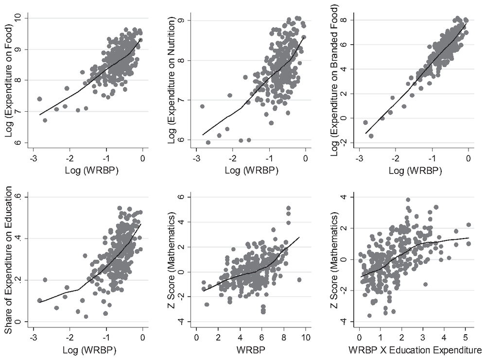

Impact of Gendered Participation in Market-Linked Value Chains on Economic Outcomes
Evidence from India · with Vivek Pandey and Hari K. Nagarajan
A dairy program in Bihar that brought women into milk markets increased their say at home. Through that channel, households spent more on food and nutrition, ate more varied diets, and children did better in maths.
1 · The question
Does bringing women into markets change decisions at home?
Women do more than 60 percent of the work in Indian dairying. This paper asks whether a program that links dairy farmers to milk markets, and draws women in, raises women’s bargaining power, and whether that changes what households spend on.
2 · The setting
Dairy villages in Darbhanga, Bihar
300
households owning fewer than five dairy animals
28
villages: 17 in the National Dairy Plan-I, 11 outside it
2018–19
survey, alongside a game played between spouses
3 · How we measure it
A money game between husband and wife
Each spouse received INR 170, about one day’s rural wage, and stated in private how much they would give and expected to receive. The answers give an index of the wife’s bargaining power relative to her husband’s.
Women’s relative bargaining power (index, 0 to 1)
Program households
0.58
Non-program households
0.47
4 · What happened
Effects are much larger through women’s bargaining power
Response of nutrition spending to the program
Program alonegender-neutral
0.26
Through women’s bargaining power
0.94
Elasticities: how strongly nutrition spending responds.
Children’s maths score (standard deviations)
Program alonegender-neutral
no significant effect
Through women’s bargaining power
+0.35
Maths tested for children in grades 1 to 8.

From the paper: household spending and children’s maths scores rise with women’s relative bargaining power (WRBP). Source: Fig. 3, Food Policy (2021).
5 · A safety net too
Program households were better shielded from income drops
Fall in household spending when income falls by 1%
Without the program
0.463%
With the program
0.198%
If value chains are gender-neutral, direct program effects are significant but small. Programs should be designed so that identifiable mechanisms magnify the agency of women within households.